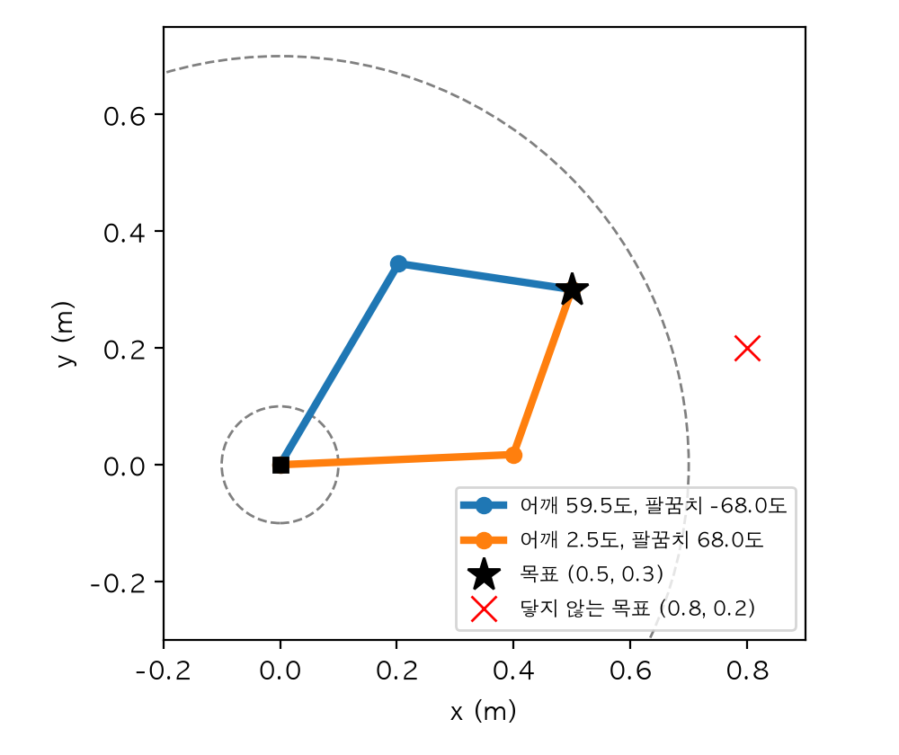

책상 위에 스티커를 하나 붙이고, 로봇 손끝을 그 위에 정확히 올려놓는 일을 해 보겠습니다. 링크 길이 0.4m·0.3m와 스티커 위치 (0.5, 0.3)m는 그대로 두고, 두 관절을 어떻게 굽히느냐만 바꿉니다. 지난 시간에는 관절각을 주고 손끝을 구했으니, 이번에는 순서를 뒤집어 손끝을 먼저 정하고 관절각을 찾습니다.
손끝을 한 점에 붙여 두면 팔이 두 가지로 놓입니다

숫자·공식·코드로 이어 보기
먼저 손으로 해 봅니다. 어깨에서 스티커를 바라보는 방향은 오른쪽 위로 31°쯤입니다. 그 방향으로 팔을 뻗다가 팔꿈치를 위로 들면서 손끝을 스티커에 맞춰 보세요. 이번에는 같은 자리에서 팔꿈치를 아래로 내리면서 손끝을 다시 스티커에 맞춰 보세요. 손목을 비틀지 않아도 두 자세 모두 손끝이 같은 점에 닿습니다.
두 자세의 공통점은 손끝 위치이고, 다른 점은 팔꿈치 관절이 어깨와 손끝을 잇는 선의 위쪽에 있느냐 아래쪽에 있느냐입니다. 위로 든 자세를 팔꿈치 위, 아래로 내린 자세를 팔꿈치 아래라고 부릅니다. 두 자세는 그 선을 기준으로 거울에 비친 모양입니다.
링크 길이 0.4m·0.3m와 스티커 위치 (0.5, 0.3)m는 고정입니다. 바뀌는 것은 어깨각과 팔꿈치각 두 개뿐입니다. 손끝이라는 결과는 하나인데, 그 결과를 만드는 관절 조합은 여럿일 수 있다는 것이 오늘의 출발점입니다.
스티커를 조금씩 옮겨 보면 경우가 셋으로 갈립니다. 가까운 곳에 두면 두 자세가 나오고, 팔을 완전히 펴야 닿는 거리에 두면 두 자세가 하나로 겹치며, 너무 멀거나 몸쪽에 너무 가까우면 아예 닿지 않습니다. 이 셋을 눈대중이 아니라 계산으로 구분하는 것이 이번 목표입니다.
세 변을 아는 삼각형에서 팔꿈치 각도가 나옵니다
어깨·팔꿈치·손끝 세 점을 이으면 삼각형이 됩니다. 두 변은 이미 아는 링크 길이 0.4m와 0.3m이고, 나머지 한 변은 어깨에서 스티커까지의 직선거리입니다. 스티커가 (0.5, 0.3)m이므로 그 거리는
숫자·공식·코드로 이어 보기
입니다. 이제 세 변의 길이를 모두 아는 삼각형이므로, 코사인 법칙으로 어깨 쪽이 아닌 팔꿈치 쪽 각을 구할 수 있습니다. 팔꿈치 각은 아래팔이 위팔에 대해 상대적으로 꺾인 각도이고, 부호까지 포함해 θ₂로 씁니다.
θ₂ = ±arccos(cosθ₂)
숫자를 넣어 봅니다. r² = 0.34, L₁² = 0.16, L₂² = 0.09, 분모 2×0.4×0.3 = 0.24입니다.
- cosθ₂ = (0.34 − 0.16 − 0.09) / 0.24 = 0.09 / 0.24 = 0.375
- arccos(0.375) = 67.98°. 코사인은 짝함수라 −67.98°도 같은 값을 냅니다.
- 그래서 팔꿈치 후보는 +67.98°(양의 상대각)와 −67.98°(음의 상대각) 두 개입니다.
- 어깨는 스티커 방향 30.96°에서, 굽힘 때문에 생긴 기울기 28.49°를 빼서 2.48°, 더해서 59.45°가 됩니다.
4번의 두 번째 항이 낯설 수 있으니 천천히 봅니다. 어깨에서 스티커를 보는 선의 방향은 30.96°입니다. 손끝은 당연히 그 선의 끝에 있습니다. 다른 것은 위팔이 향하는 방향입니다. 양의 팔꿈치각에서는 위팔이 그 선보다 28.49° 아래를 향해 어깨각이 2.48°이고, 음의 팔꿈치각에서는 28.49° 위를 향해 59.45°입니다. 따라서 이 목표에서 +67.98°는 팔꿈치가 목표선 아래에 있는 자세, −67.98°는 위에 있는 자세입니다. 상대각의 부호와 팔꿈치의 위·아래 위치를 섞지 마세요. 두 후보의 차이가 정확히 그 기울기의 두 배라는 점도 확인해 보세요.
이 식을 코드로 옮기면 아래와 같습니다. 각 줄이 방금 손으로 한 계산의 어느 부분인지 표시해 두었습니다.
if abs(c2) > 1:
return [] # 코사인이 될 수 없는 값: 스티커에 닿지 않음
elbow = np.arccos(c2) # 2번: 팔꿈치 크기
shoulder = np.arctan2(y, x) - np.arctan2( # 4번: 스티커 방향 − 굽힘 기울기
L2*np.sin(elbow), L1+L2*np.cos(elbow))c2는 1번에서 구한 코사인 값, elbow는 2번의 각도입니다. arccos는 코사인 값을 각도로 되돌리는 함수이며, 코사인은 −1부터 1까지만 가능하므로 범위를 벗어난 값이 들어오면 각도가 존재하지 않습니다. 그래서 첫 줄의 검사가 계산보다 먼저 옵니다.
atan2(y, x)는 x와 y의 부호를 함께 보아 어느 사분면인지 구분합니다. atan(y/x)로 바꾸면 x가 0일 때 나눗셈이 터지고, 왼쪽 아래 방향을 오른쪽 위로 착각합니다. 스티커가 어느 쪽에 있어도 같은 코드가 돌아야 하므로 atan2를 씁니다.
한 가지 더. 각도를 −180°~180°로 정리하는 나머지 연산은 같은 방향을 다르게 적는 것이지, 모터가 그 각도까지 갈 수 있는지 검사하는 일이 아닙니다. 관절 한계는 별도 문제이고, 그 이야기는 관절 한계 차시에서 따로 합니다.
같은 손끝, 서로 다른 팔꿈치 — 그리고 닿지 않는 경우
숫자·공식·코드로 이어 보기
방금 계산한 두 답을 실제로 넣어 확인합니다. 어깨 59.45°·팔꿈치 −67.98°로 순기구학을 계산하면 손끝이 (0.5000, 0.3000) 근처로 돌아오고, 어깨 2.48°·팔꿈치 67.98°도 마찬가지입니다. 표시를 반올림하기 전의 각도를 넣으면 남는 차이는 10−16m 수준입니다. 위에 적은 소수 둘째 자리 각도만 넣으면 각도를 반올림한 만큼 더 큰 오차가 남습니다. 답을 낸 뒤 순기구학에 다시 넣어 보는 이 습관이 역기구학의 채점입니다.
| 스티커 위치(m) | 해 개수 | 이유 |
|---|---|---|
| (0.5, 0.3) | 2 | 고리 안쪽의 일반적인 점. 위·아래 두 자세 |
| (0.7, 0) | 1 | 완전히 편 경계. 두 자세가 하나로 겹침 |
| (0.8, 0.2) | 0 | 두 링크 길이 합 0.7m보다 멂 |
| (0.05, 0) | 0 | 안쪽 구멍 안. 아무리 접어도 닿지 않음 |
표의 두 번째 줄을 계산으로 확인해 봅시다. (0.7, 0)은 r = 0.7이라 cosθ₂ = (0.49 − 0.25)/0.24 = 1.0입니다. arccos(1)은 0° 하나뿐이라 +0°와 −0°가 같은 각도가 되고, 그래서 해가 하나로 합쳐집니다. (0.8, 0.2)는 r² = 0.68이라 cosθ₂ = (0.68 − 0.25)/0.24 ≈ 1.79가 되어 코사인의 범위를 넘습니다. 이때 arccos를 억지로 계산하면 오류가 나거나 엉뚱한 값이 나오므로, 범위 검사가 먼저입니다.
이 표는 관절 한계와 충돌을 넣지 않은 기하학적 결과입니다. 실제 로봇에서는 두 후보 중 하나가 관절 범위를 벗어나 탈락하거나, 팔꿈치가 책상에 부딪혀 못 가는 경우가 생깁니다. 후보를 계산하는 일과 후보를 고르는 일은 다릅니다. 고르는 기준은 상황에 따릅니다. 책상 아래로 팔꿈치가 내려가면 부딪히니 위 자세를, 지금 자세에서 조금만 움직이면 되는 쪽을 고르기도 합니다.
마지막으로 이 공식의 적용 범위를 분명히 해 둡니다. 코사인 법칙으로 푸는 이 방법은 지금 다루는 평면 2링크 팔에 대한 공식입니다. 손목 세 축이 한 점에서 만나는 6자유도 팔 같은 특별한 구조에서도 공식을 만들 수 있지만 유도가 길어집니다. 공식을 만들 수 없는 팔은 다음 차시부터 배우는 반복 계산으로 풉니다. 그 계산에 필요한 “조금 움직이면 얼마나 변하나” 비율표가 야코비안입니다.
정확히 접힌 경계에서 +180°와 −180°가 나오면 방향은 같은 자세입니다. 실제 모터가 그 각도까지 감겨 있는지, 허용 범위가 어디까지인지는 기하학 계산과 별개로 확인해야 합니다.
선택 · 배운 뒤 스스로 확인
같은 계산을 자기 손으로 한 번 더
여기까지 읽고 나서, 방금 한 계산을 손으로 다시 해 보고 싶을 때만 펼쳐 보세요. 새 개념은 없습니다. 스티커를 더 멀리 옮겼을 때 코사인 값이 어떻게 되는지, 팔을 완전히 펴는 경계에서 답이 몇 개인지 확인하는 두 문제입니다. 채점 결과는 이해의 증명이 아니라 어디를 다시 볼지 알려 주는 신호로 쓰세요.
연습 두 문제 펼치기
두 문제의 공통점은 arccos를 누르기 전에 코사인 값을 먼저 판정한다는 것입니다. 답이 틀렸다면 1번 계산의 분모 0.24와 r²을 다시 확인하세요.
수업 근거 / 원문 보기
강의 교안 PDF p.16~18(역기구학의 세 경우, 코사인 법칙, 팔꿈치 위·아래)과 교과서 3.4절을 하나의 설명으로 합쳤습니다. 교과서 3.4의 삼각형 설명·atan2 주의·두 해 그림을 본문에 녹였고, 출처를 나란히 비교하는 문단은 두지 않았습니다.
- 교과서 캐시: PDF 파일 113쪽 · PDF 파일 116쪽 · 3장 원고 전체
- 수치 구분: 59.45°·2.48°·67.98°와 두 자세 그림은 강의 교안 값입니다. 네 자리 값(59.4502°·2.4773°·67.9757°)은 같은 식을 독립 계산해 확인한 값이며, 표의 해 개수도 기하 조건에서 직접 판정했습니다.
- 도해:
assets/day2-ik2_two.png— 교과서 3.4절 두 해 그림을 정돈한 자료입니다.